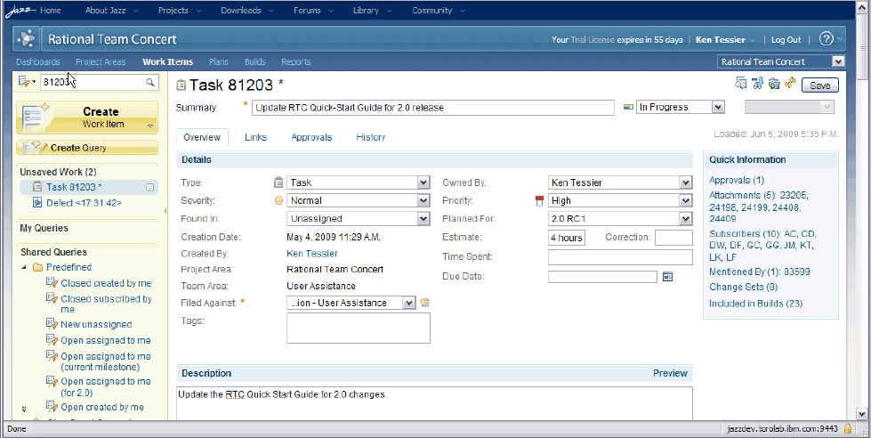

The Web client UI is better suited for casual or
occasional users than the IDE because it does not require
installing any special software on the client machine; all that's
needed is a Web browser. Each
Jazz™ Team Server has a main
web page where the user can select a project area and log in.
Once logged in, the user can interact with the
Jazz Team Server and browse
information in the Jazz repository, including reading about
recent events, entering and updating work items, and downloading
builds.
Figure
1illustrates the Web UI showing a work item.
Figure 1. Web user interface showing a
work item
